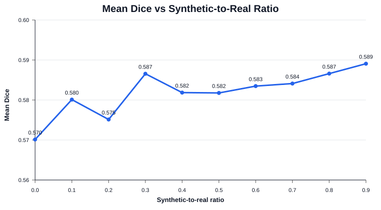

Diffusion-Augmented 3D Brain Lesion Segmentation
Can diffusion-generated synthetic MRI data improve lesion segmentation when real medical imaging data is limited?
What this project does
This project studies whether synthetic MRI cases generated with a diffusion pipeline can be mixed with real ATLAS cases to train a stronger 3D lesion segmentation model. The segmentation model is a MONAI 3D U-Net that produces a binary lesion mask from a single MRI volume.
Method
Experiment results
Performance was measured across synthetic-to-real ratios from 0.0 to 0.9. The results suggest a modest improvement, while also showing why the amount of synthetic data should be tuned rather than maximized blindly.

Interactive example
Explore an example below. The MRI is shown in grayscale and the predicted lesion mask is overlaid in red. Drag the crosshair to inspect different locations.
Limitations
This is a research prototype, not a clinical diagnostic system. The displayed example is intended for visualization only. Results may depend on scanner, preprocessing, lesion size, and the distribution of the training data.